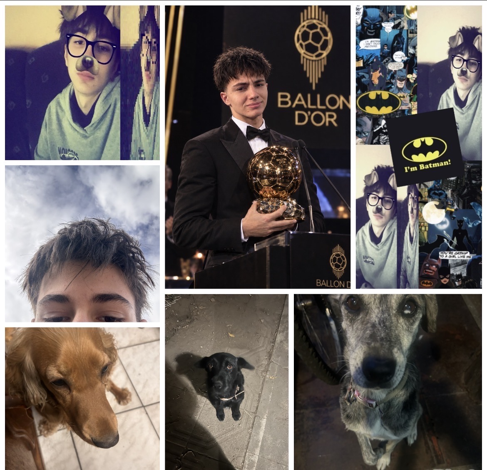

Miskolcon élek , 15eves vagyok.Sportolok vagyok , sporton belul azt ertem hogy focizok es kondizok szabad időmbe semmit nem csinalok mert nincs.
Azért választottam ezt a szakot mert érdekel az informatika és szeretnék vele foglalkozni és ugy gondoltam a Miskolci SZc Kandó Kálmán Informatikai technikumba tanulhatnam meg a legjobban
